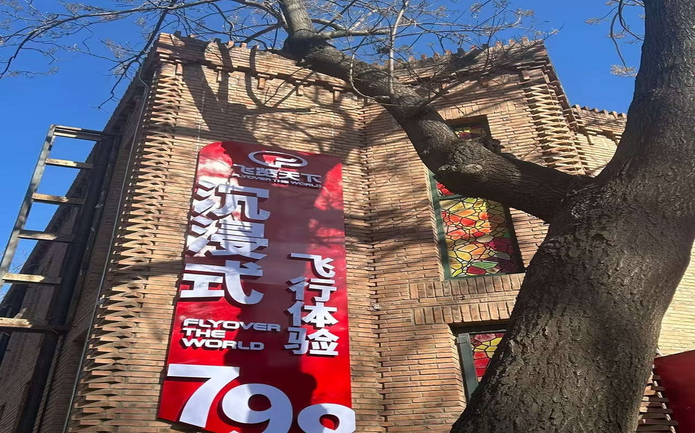
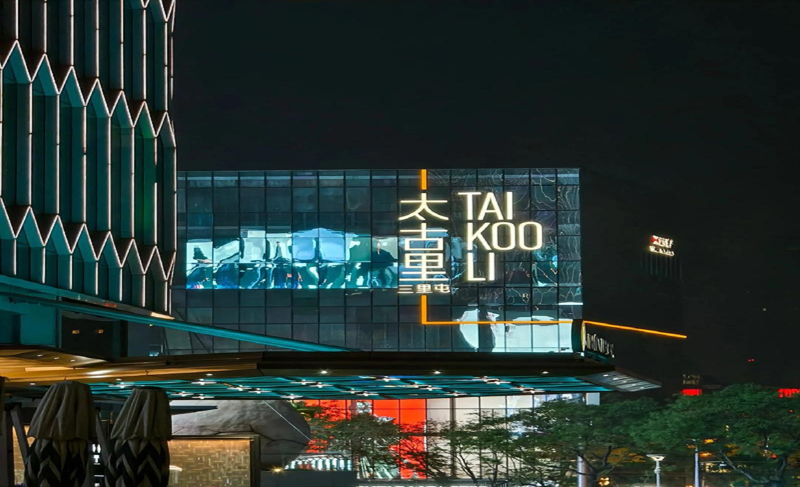

5天4晚深度行程
预算 ¥1500，慢慢逛，假装是本地人
行程概览
- 行程天数
- 5 天 4 晚
- 总预算
- 约 ¥1500（含交通、住宿、门票与餐饮，以学生票、青旅床位及文中标价估算）
- 适合人群
- 时间充裕、想深度了解北京街巷与文化的「慢游」学生党与穷游党
Day 1 · 中轴线核心（天安门 → 故宫 → 景山 → 前门）
天安门广场（免费）
建议提前 30 分钟到达，预留安检时间。站在开阔的广场上，感受中轴线的对称与庄严。

故宫博物院（学生票 ¥20，需提前 7 天预约）
走中轴线核心宫殿，午门进、神武门出，游览约 3.5 小时。可租讲解器（约 ¥20），边走边听历史故事，比盲逛更有收获。

午餐
自带干粮最省钱；若想体验景区内用餐，可在故宫角楼餐厅简单解决，注意错峰与预算。
景山公园（门票 ¥2）
从神武门出来过马路即到。登山约 20 分钟，万春亭是拍摄故宫全景的经典机位。

前门大街 / 大栅栏（免费）
逛老北京商业街，看老字号与历史建筑立面。感受时光沉淀，忍住别冲动买「景区特产」。

前门胡同夜游（杨梅竹斜街一带）
避开主街喧嚣，拐进杨梅竹斜街等支巷，找一家安静的咖啡馆或茶馆小坐，体验胡同夜晚的另一面。
住宿推荐
今晚住哪：推荐前门 / 大栅栏附近青年旅舍，例如「北京前门青年旅舍」，床位约 ¥80–100/晚。步行可达天安门与中轴景点，次日出发省心。
Day 2 · 皇家园林（颐和园 → 圆明园 → 清北打卡）
颐和园（学生票 ¥20，建议新建宫门进）
清晨昆明湖与远山层次分明，上午光适合拍照。时间宽裕可租小船泛舟（另计费），注意风浪与停船时间。

圆明园（学生票 ¥10，藻园门进）
重点游览西洋楼遗址区。夏日荷花盛开时格外惊艳，记得防晒与补水。

午餐
西苑地铁站附近美食城选择多、人均约 ¥30；也可留意周边高校食堂是否对外开放。
清华大学西门 / 北京大学东门（门口免费打卡）
经典校门机位留念。进校通常需提前预约或由校内师生协助，务必提前确认政策。

五道口大学城
逛枣糕王（约 ¥15/斤）、淘小店，感受「宇宙中心」的青春与活力。

住宿推荐
今晚住哪：推荐海淀 / 五道口附近青旅，例如「北京五道口青年旅舍」，床位约 ¥80/晚。第三天去长城交通衔接方便。
Day 3 · 长城之旅（八达岭长城 → 牛街美食）
德胜门 → 877 路 → 八达岭长城
德胜门乘 877 路（刷卡 ¥6，现金 ¥12），车程约 2.5 小时直达。尽早排队，自备饮水。
八达岭长城（学生票 ¥20）
建议走北线，视野开阔；体力允许可往好汉坡方向打卡。务必自带水和干粮，山上售价约为市区数倍。

午餐
长城脚下简餐或继续吃自带干粮，避开景区内高价套餐。
S2 线 → 清河站 → 地铁
乘市郊铁路 S2 线（约 ¥6，以当日票价为准）至清河站，再换乘地铁。沿途可感受京张铁路百年历史，时刻以车站公告为准。
牛街美食打卡
白记年糕驴打滚（约 ¥15/斤）、洪记牛肉包子（约 ¥3/个）、聚宝源熟食窗口。少量多样、趁热吃。

住宿推荐
今晚住哪：继续住在海淀 / 五道口一带较顺，第四天去 798、美术馆方向可地铁接驳，省去搬运行李的折腾。
Day 4 · 艺术与国粹（798 艺术区 → 中国美术馆 → 三里屯）
798 艺术区（免费入园）
老厂房改造的创意园区，工业风脚手架与涂鸦墙随手出片。多数画廊免费浏览，特展单独购票。

午餐
可在 798 内主题餐厅或咖啡厅解决，人均约 ¥50；想更接地气可坐地铁去望京觅食。
中国美术馆（免费，需预约）
馆藏近现代精品集中，适合慢看。若预约已满，可改逛南锣鼓巷主街+支巷，或北海公园环湖散步（门票以当季政策为准）。
三里屯太古里（免费）
感受北京潮流与夜生活氛围，建筑与橱窗本身也好拍。晚餐可在此解决，例如悠航鲜啤的汉堡，人均约 ¥70（视套餐与酒水浮动）。

住宿推荐
今晚住哪：推荐雍和宫 / 北新桥附近，地铁方便、胡同氛围浓，第五天逛国子监、五道营可步行串联。
Day 5 · 胡同烟火（国子监 → 五道营胡同 → 天坛 → 返程）
国子监街 / 孔庙（临街免费漫步，入内需门票）
闹中取静的一条街，槐荫与红墙很适合慢走。孔庙与国子监博物馆入内参观需购票，可按兴趣与预算决定是否进入。
五道营胡同（免费）
比南锣鼓巷更安静、更有格调，独立咖啡馆与设计师小店密集，适合买伴手礼或发呆一小时。

午餐
雍和宫 / 北新桥一带可选新侨小馆等地道北京菜，或老字号「大懒龙」来份肉龙，人均约 ¥25 起。
天坛公园（学生票约 ¥17）
祈年殿是标志打卡点，感受昔日祭天礼仪的空间尺度。祈年殿造型冰淇淋（约 ¥20）既是降温道具也是拍照小道具。

返程
根据车次或航班前往车站 / 机场，预留安检与可能的拥堵时间。五天慢游收尾，把没吃完的零食装进行李也无妨。